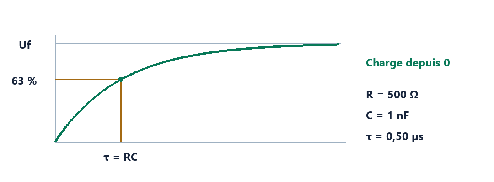

Comprendre le cours
1. Mesurer une tension, un courant et une puissance
La tension se mesure entre deux points avec un appareil branché en parallèle. Le courant traversant une branche se mesure en série. Avant de brancher un multimètre, vérifie le mode, les bornes et le calibre. Pour une résistance, U=RI. Pour une tension efficace aux bornes d’une charge résistive, la puissance moyenne vaut Ueff²/R.
Sur un oscilloscope, lis les volts par division puis les secondes par division. La tension crête à crête est l’écart entre maximum et minimum. Pour une sinusoïde centrée, la valeur efficace vaut la crête divisée par √2. Indique la grandeur choisie pour éviter les comparaisons incohérentes entre appareils.
2. Convertir les niveaux en décibels
Le décibel exprime un rapport. Pour une puissance, le rapport de sortie à entrée se lit 10 log₁₀(Psortie/Pentrée). Une perte, annoncée positive quand la puissance baisse, utilise le rapport inverse. Le dBm utilise la référence 1 mW. Le dBµV utilise la référence 1 µV et un logarithme multiplié par 20.
Pour rapprocher un niveau de tension d’un niveau de puissance, convertis la tension en volts efficaces et utilise l’impédance de la charge. La réception TV du TP s’analyse avec la puissance utile, le bruit et les unités adaptées à la mesure de 75 Ω.
3. Suivre une charge RC
Dans un circuit RC, le condensateur ne change pas instantanément de tension lorsque la source applique un échelon. La constante de temps vaut τ=RC. Pour une charge qui part de U₀ et tend vers Uf, la tension vaut Uf+(U₀−Uf)e−t/τ. Au bout d’une constante, elle a effectué environ 63 % du changement total.

Pour une décharge vers zéro, il reste environ 37 % de la valeur de départ au bout de τ. Mesure depuis le début réel de l’échelon, vérifie le niveau initial et le niveau final, puis compare à la valeur calculée.
4. Comparer fibre, coaxial, radio et paire torsadée
En fibre, une mesure de puissance en entrée et en sortie donne la perte d’insertion en dB. Une mesure sur plusieurs longueurs permet de distinguer la perte liée à la distance de celle des connexions. Pour un coaxial, vérifie l’impédance des éléments. Une désadaptation réfléchit une partie de l’onde. La mesure de transmission compare les niveaux en entrée et sortie pour une fréquence donnée.
En transmission hertzienne, la distance, l’orientation et la polarisation des antennes changent la puissance reçue. Lors du relevé, modifie un seul réglage pour pouvoir expliquer sa contribution. Pour un câble Ethernet, contrôle le câblage des paires et compare les paramètres de transmission aux critères de la certification du TP. Un lien qui s’allume ne garantit pas que toutes les mesures sont dans les limites attendues.
Sigles et acronymes
- RC · Résistance et condensateur
- Circuit associant une résistance et un condensateur.
Exemple. Dans une charge RC, la tension du condensateur monte progressivement. - TNT · Télévision numérique terrestre
- Diffusion télévisée numérique par voie hertzienne.
Exemple. Le mesureur de champ permet de repérer un canal TNT reçu par l’antenne. - WDM · Wavelength Division Multiplexing
- Multiplexage de plusieurs longueurs d’onde sur une fibre.
Exemple. Deux canaux optiques peuvent voyager en même temps sur le même brin.
Du cours aux TD et TP
Questions TD & TP
TP3 · Convertir 65 dBµV sur 75 Ω
Énoncé. Une antenne reçoit 65 dBµV sur 75 Ω. Calculer la tension puis la puissance reçue en watts et en dBm.
- Calcule
10^(65/20) µV≈1778 µV, soit1,778 mVefficaces. - La puissance vaut
(1,778×10⁻³)²/75≈4,22×10⁻⁸ W. - Convertis avec
10 log₁₀(P/0,001). Tu obtiens environ−43,75 dBm. Un niveau positif en dBµV et négatif en dBm peuvent décrire la même mesure sur cette charge.
TP4 · Prévoir le temps de charge
Énoncé. Pour R=500 Ω et C=1 nF, calculer la constante de temps et comparer à une mesure sur la courbe.
τ=500×10⁻⁹ s=0,50 µs. Repère le début du front. Calcule la différence entre la valeur finale et la valeur initiale.- Place un curseur au niveau initial plus 63,2 % de cette différence. Lis la durée depuis le front. Pour une décharge vers zéro, prends plutôt 36,8 % de la valeur de départ.
- Compare mesure et théorie. En cas d’écart, vérifie la lecture, les valeurs réelles des composants et l’influence des éléments reliés au circuit.
TP5 · Convertir les puissances d’entrée et de sortie en perte
Énoncé. Un dispositif reçoit 100 µW et transmet 95 µW. Donner le rapport et la perte en dB.
- Le rapport entrée sur sortie vaut
100/95≈1,053et la perte vaut10 log₁₀(100/95)≈0,223 dB. - Le gain entrée-sortie exprimé par le rapport sortie sur entrée vaut
−0,223 dB. Avec l’instrument, relève d’abord les deux niveaux et indique la convention de signe du résultat.
TP6, TP7 et TP9 · Construire une preuve de mesure
Démarches des TP. Relever l’atténuation d’un coaxial, la variation de puissance entre antennes et les résultats de certification d’un lien Ethernet.
- Pour le coaxial, fais une mesure de référence avec les raccords et le montage prescrits, puis insère le câble. Compare au même réglage de fréquence et de niveau.
- Pour les antennes, garde l’émission fixe et fais varier seulement l’orientation ou la distance selon la série demandée. Note chaque réglage avec la puissance calculée à partir de la tension efficace.
- Pour la paire torsadée, lis la carte de câblage puis les marges par rapport au profil testé. Un test de continuité identifie les connexions. L’analyse de transmission permet ensuite de juger la qualité du lien.